World Chess Champions
The title of World Chess Champion has been held by some of the greatest minds in chess history. Here are the official classical champions and a glimpse into their achievements.
Classical World Chess Champions
Wilhelm Steinitz (1886-1894) 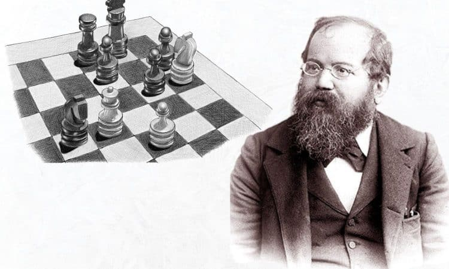
The first official World Chess Champion. Known for introducing positional concepts and strategic thinking that formed the foundation of modern chess.
Emanuel Lasker (1894-1921) 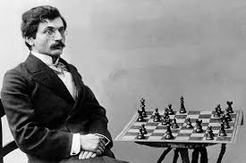
Held the title for 27 years. Famous for psychological play and adaptability. He often outsmarted opponents by understanding their weaknesses.
Jose Raul Capablanca (1921-1927) 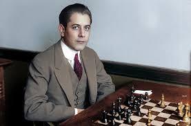
A Cuban prodigy known for his simplicity and elegance. Exceptional at endgames and famous for almost flawless technique.
Alexander Alekhine (1927-1935) 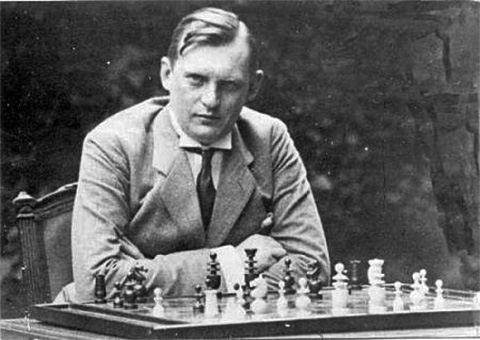
Known for imaginative tactics and aggressive style. He revolutionized chess with deep combinations and sharp attacking play.
Max Euwe (1935-1937) 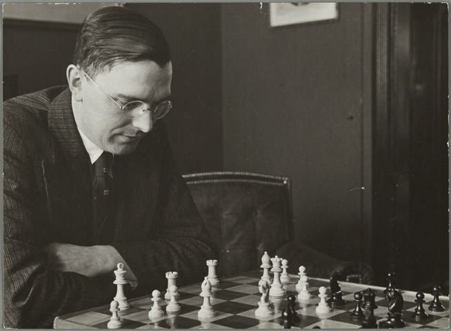
Dutch mathematician and champion. Strong positional player who defeated Alekhine in 1935, emphasizing logical play over pure tactics.
Mikhail Botvinnik (1948-1957) 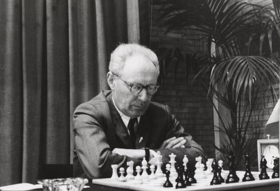
Father of the Soviet Chess School. Known for rigorous preparation and scientific approach to the game. Mentored many future champions.
Vasily Smyslov (1957-1958) 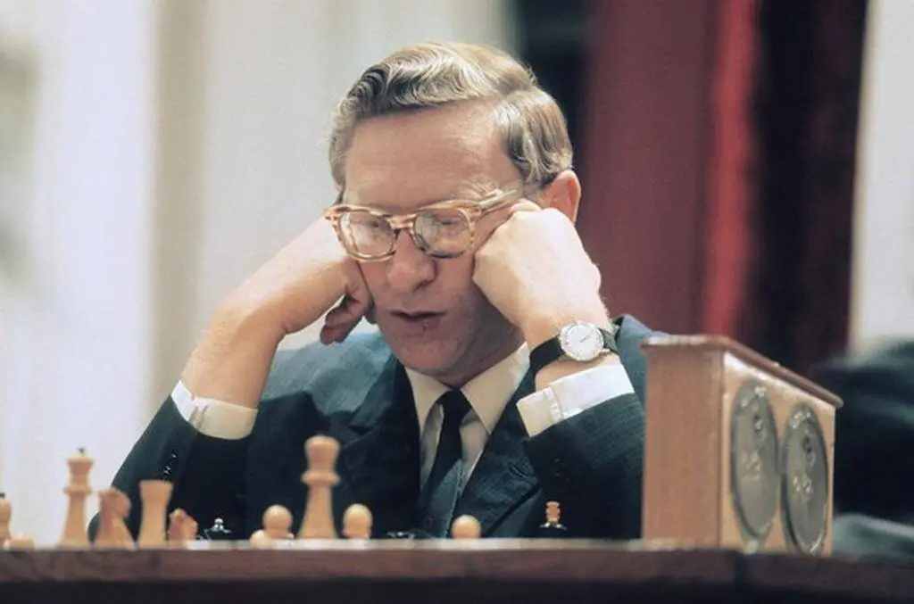
Renowned for his endgame mastery and harmonious style. Focused on positional play and long-term strategy rather than immediate tactics.
Mikhail Tal (1960-1961) 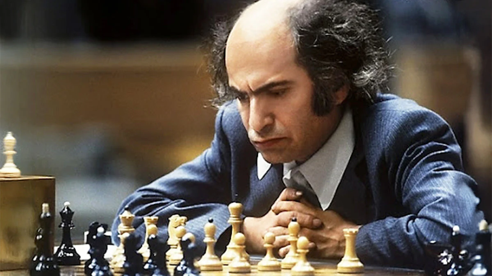
The “Magician from Riga”. Famous for daring sacrifices, creative attacking combinations, and unpredictable play that dazzled the chess world.
Tigran Petrosian (1963-1969) 
Known as the “Iron Tigran” for his impenetrable defense. Exceptional at prophylaxis - preventing opponents’ plans before they begin.
Boris Spassky (1969-1972) 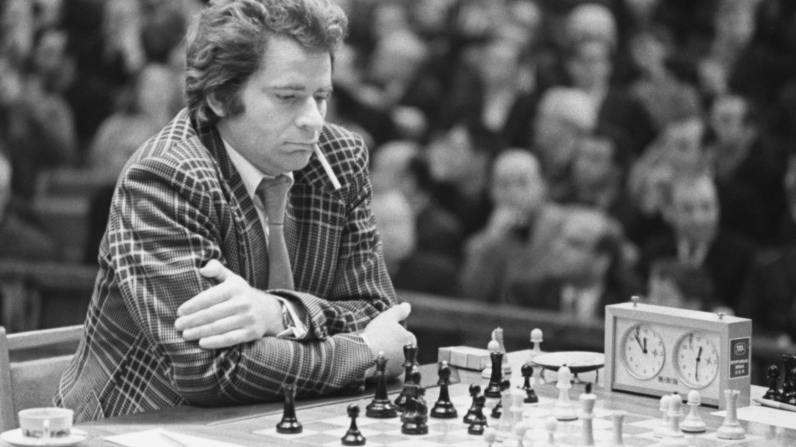
Balanced style combining positional skill with tactical vision. Famous for his World Championship match against Fischer in 1972.
Robert James Fischer (1972-1975) 
The first American World Champion. Known for deep preparation, opening innovations, and defeating Spassky in a historic match during the Cold War era.
Anatoly Karpov (1975-1985) 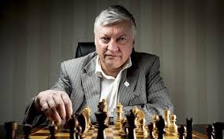
Master of positional play and strategic precision. Became champion by default after Fischer refused to defend the title, later dominating the chess world for a decade.
Garry Kasparov (1985-2000) 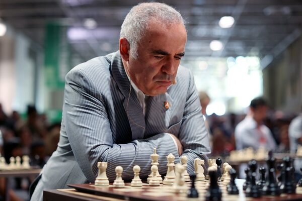
Considered one of the greatest ever. Aggressive, deeply prepared, and extremely versatile. Dominated opponents for 15 years, combining tactics and strategy perfectly.
Vladimir Kramnik (2000-2007) 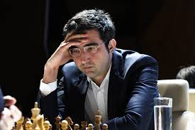
Famous for defeating Kasparov in 2000. Strong positional player who excelled in defense and strategic planning, also known for deep opening preparation.
Viswanathan Anand (2007-2013) 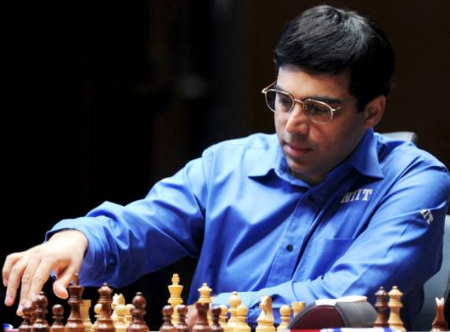
First Indian World Champion. Known for quick calculation, versatility in openings, and a calm but aggressive playing style. Popularized chess in India.
Magnus Carlsen (2013-2023) 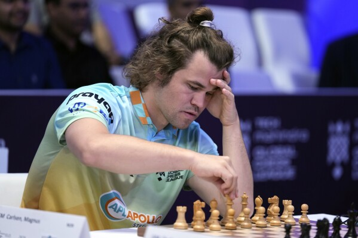
Universal playing style, exceptional endgame technique, and deep understanding of positions. Dominates modern chess with both classical and rapid formats. Highest rated player of all time.
Ding Liren (2023-2024) 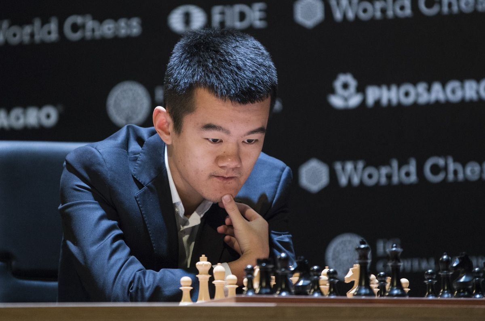
Ding Liren made history as the first Chinese player to hold the classical title after defeating Ian Nepomniachtchi in an unlikely 2023 match. Known for his talent, kindness, and long unbeaten streaks & also holds records like being the first Chinese player to surpass 2800 Elo.
Gukesh Dommaraju (2024-present) 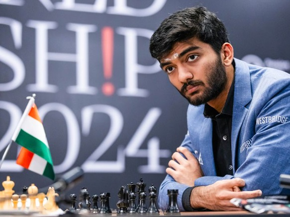
The youngest-ever World Chess Champion. A prodigy from India known for strong calculation, deep preparation, and historical victory in 2024. He surpassed previous champions at age 18.
Why They Stand Out
These champions shaped the game with unique styles: tactical brilliance, strategic depth, and the ability to innovate under pressure. Studying their games is a key part of learning chess.